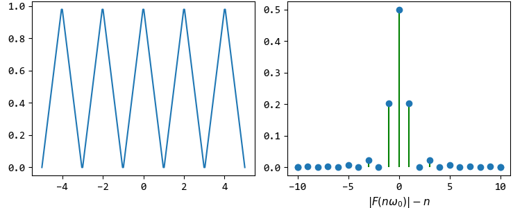
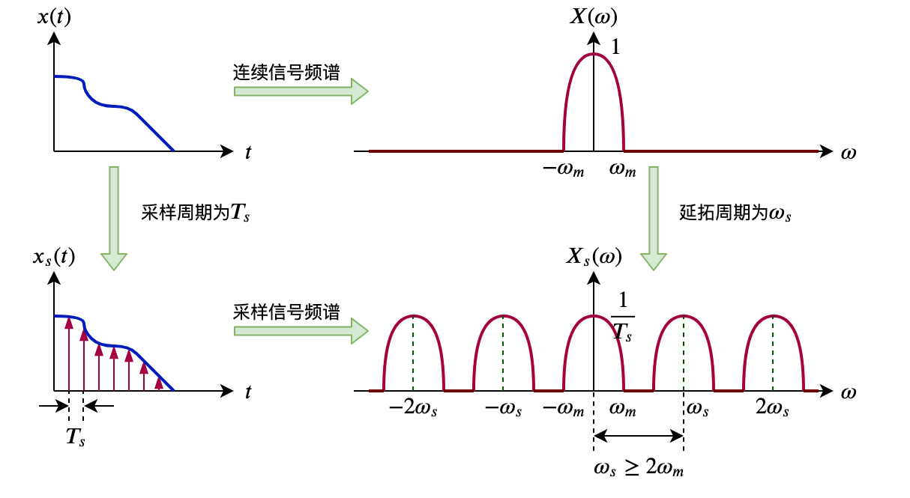
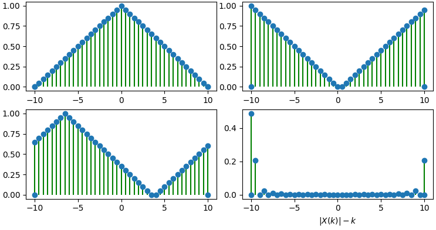
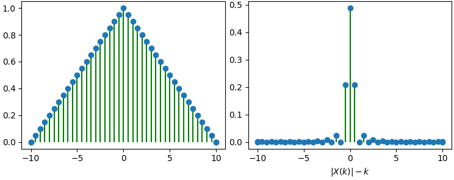
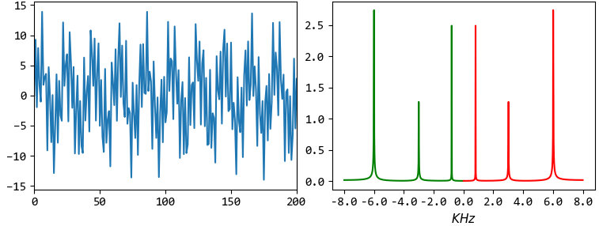

Fourier#
傅里叶级数(Fourier Series)#
周期信号为：
三角函数形式的FS为：
指数形式的FS为：
两种形式之间有：
FS用于连续周期信号。 连续周期信号级数的系数关于角频率的关系为频谱，频谱为离散非周期信号。
博里叶变换(Fourier Transform)#
当连续周期信号的周期趋于无穷大时，即变为连续非周期信号。 对于频谱，当 \(T \to \infty\) 时，则谱线间的距离 \(\frac{2 \pi}{T} \to 0\) ，即频谱变成连续信号。
连续非周期信号的频谱也是非周期连续信号。
采样定理(Sample)#
单位脉冲函数为：
脉冲函数为（理想）：
设采样周期为 \(T_s\) ，对连续信号采样即是与脉冲函数相乘，则理想采样信号为（仍是连续信号）：
根据FT卷积性质，时域相乘的结果即是频率卷积，而与脉冲函数的卷积即是在每个脉冲位置产生一个镜像，所以理想采样信号的频谱为：
可知：理想采样信号的频谱是连续信号频谱的周期延拓，延拓周期为 \(\omega_s\) ，幅值为 \(\frac{1}{T_s}\) 倍。
当采样频率大于信号最大频率 \(\omega_m\) 的两倍时，可以从采样信号准确地恢复原信号（取一个频谱周期进行傅里叶逆变换）。
离散傅里叶级数(Discrete Time Fourier Series)#
连续周期信号经采样变成离散周期信号：
离散周期信号（周期序列）的频谱也是周期离散信号，且频谱周期为 \(2 \pi\) 。
DFS公式如下：
离散时间傅里叶变换(Discrete Time Fourier Transform)#
当离散周期信号的周期趋于无穷大时，即变为离散非周期信号。 离散非周期信号的频谱为周期连续信号。
DTFT公式如下：
- 时域和域频关系:
时域 . |
频域 . |
公式. |
|
|---|---|---|---|
连续-周期 |
非周期-离散 |
|
|
连续-非周期 |
非周期-连续 |
|
|
离散-周期 |
周期-离散 |
|
|
离散-非周期 |
周期-连续 |
|
|
离散傅里叶变换(Discrete Fourier Transform)#
用计算机进行傅里叶变换运行时，需要时域和频域的信号均是离散且有限的。
设置有限序列 \(x(n)\) 的长度为 \(M\) ，则 \(N\) 点（ \(N \ge M\) ）DFT公式如下：
DFT是DFS时域和频率的主值周期(对比DFT和DFS的演示图理解)
无论怎么截取主周期 \(x(n)\) ，均不会改变周期信号的频谱信息（如下图所示）；
但计算DFT时，坐标 \(k\) 使用不同的范围，则可以截取对应的频谱区间；默认 \(k \in [0, N)\) ，故对应的频谱不是关于零点对称的；若如下图中取 \(k \in [-N/2, N/2)\) ，则可得到关于零点对称的频谱区间。
DFT是对DTFT的频域采样
帕塞瓦尔定理(Parseval's theorem)，即总能量为：
快速傅里叶变换(Fast Fourier Transform)#
FFT是DFT一种快速计算方法，并不是新的变换算法。
FFT的基本思想，是将一个长度列递归分解成两个短序列，利用指数因子 \(W_N\) 的周期性和对称性等性质，加速DFT计算。常用方法是 基2时分法 和 基2频分法 。
基2时分法采用递归计算：
正变换递归计算式：
其中 \(X_1(k)\) 为频谱偶数下标序列， \(X_2(k)\) 为频谱奇数下标序列，每一次递归，DFT的变换长度就小一半，最终的递归基是求单点序列的DFT（即有 \(X(0)=x(0)\) ）。
逆变换递归计算式：
其中 \(x_1(n)\) 为偶数下标序列， \(x_2(n)\) 为奇数下标序列，每一次递归，DFT的逆变换长度就小一半，最终的递归基是求单点序列的IDFT（即有 \(x(0)=X(0)\) ）。
如下图是FFT的频谱（已经进行了左右shift）：
根据采样定理，采样频率 \(f\) 必须 \(>=\) 原信号最高频率的2倍； 所以采样信号号经过DFT后，能看到的最高频率为 \(\frac{f}{2}\) (即只能保留原信号 \(\frac{f}{2}\) 频率的信息)； 固而频谱图中横坐标的范围为 \([-\frac{f}{2}, \frac{f}{2}]\) ，且频谱是对称的，一般用一半（如图中红线部分）就可以。
- 参考: